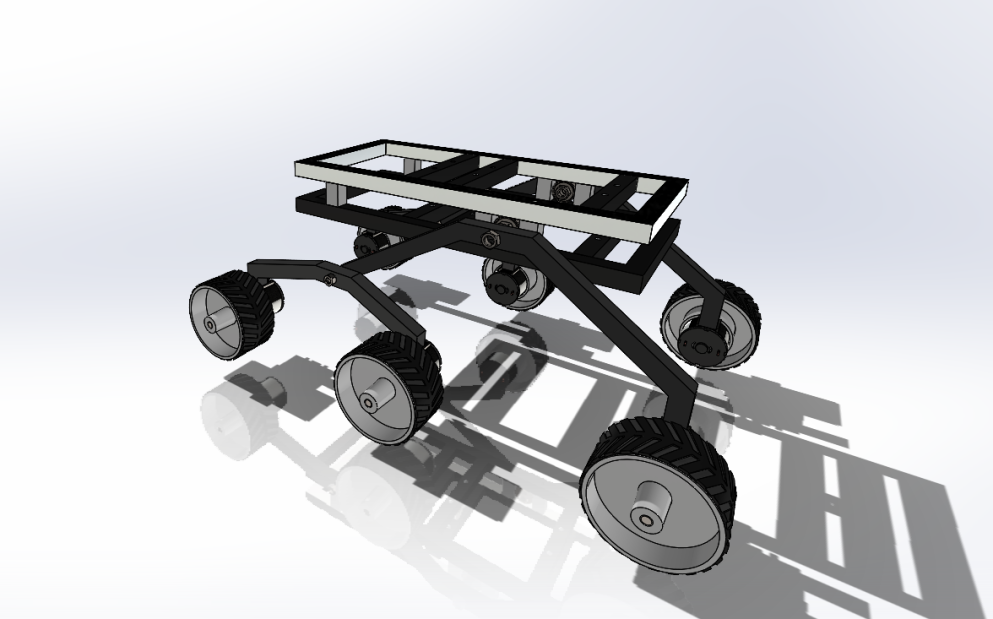

Mission & project maturity
The team developed a small Mars rover concept to investigate geological history, hydrated minerals, and subsurface ice. The March 2024 review identifies me as Lead Systems Engineer. This is an educational mission concept and requirements review, not flown hardware.
The existing portfolio describes my work connecting mission objectives to hardware capability and a Siemens NX lander/rover architecture. The linked report is a team deliverable with separately named mechanical, thermal, electrical, GNC, and science contributors.
Requirements & constraints
| Requirement | Documented value | Status |
|---|---|---|
| MR-1: compact configuration | 100 × 100 × 100 cm | Concept envelope; compliance TBD in report |
| MR-2: total system mass | No more than 45 kg | Mass limit; compliance TBD in report |
| Mission location | Within 10 km of a selected volcano | Mission concept objective |
The envelope is equivalent to 1 m³. These numbers come from the mission statement and requirements table on PDF pages 6–7. They are requirements, not measured mass or final as-built dimensions.
My responsibility & system architecture
As lead systems engineer, I connected science objectives, environmental constraints, and subsystem capabilities into the team architecture. The existing portfolio records NX CAD work and requirements definition; the team report supplies the broader interface and trade-study context.
Personal authorship of every subsystem analysis is not implied by my leadership role.
Material trade & engineering concern
The team’s chassis study compared alpha titanium alloy, carbon-nanotube composite, and carbon fiber using weighted criteria for cost, strength, hardness, shielding, thermal behavior, and density. The documented totals were 71.2%, 68.1%, and 58.2%, respectively (PDF pages 19–20). These are decision-matrix scores, not measured performance or confidence levels.
The report identifies uncertain Martian environmental effects as a chassis-material risk and proposes testing in simulated conditions (page 64). This is risk identification and planned mitigation, rather than an observed material failure or completed corrective test.
Verification planning & result
The review links requirements to verification methods and includes interface control, redundancy, risk, cost, and schedule sections. The available result is the 77-page team review document; the top-level mass and envelope requirements still have TBD compliance status.
Engineering takeaway: a weighted trade study can organize a concept decision, but material-property evidence and a closed verification plan are still needed before the selection becomes a validated design.
